ERA5 1981–2025 · Pearson r, lag sweep 0–6 months · p < 0.05 · Gray = no reliable signal · Split diagonal = both signs across seasons
View:
Each map shows the strongest significant correlation between a climate index and trimester rainfall across all countries.
Total maps show the raw pairwise association (including signal shared with other modes).
Unique signal maps show the partial correlation, holding other modes constant —
shrinkage from Total to Unique indicates that modes share variance, not that the signal is absent.
Trimester labels follow the start-of-season convention (DJF 2024 = Dec 2024 – Feb 2025).
Niño3.4 (ENSO)
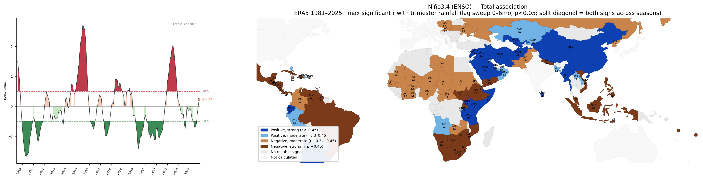
Total association — pairwise r between Niño3.4 (ENSO) and trimester rainfall. Includes signal shared with other climate modes.
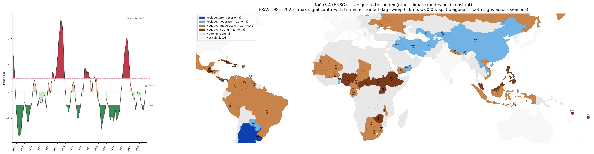
Unique signal — partial r, other climate modes held constant. Shrinkage vs Total = shared variance (not absent signal).
IOD (Indian Ocean Dipole)
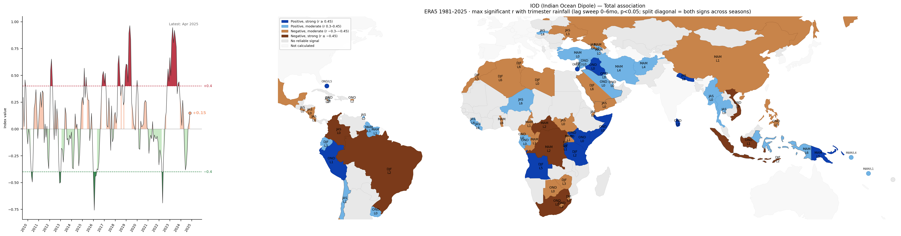
Total association — pairwise r between IOD (Indian Ocean Dipole) and trimester rainfall. Includes signal shared with other climate modes.
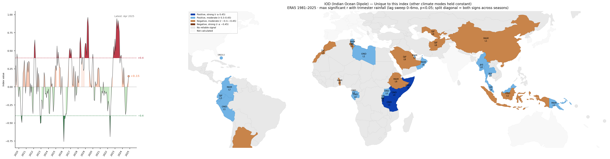
Unique signal — partial r, other climate modes held constant. Shrinkage vs Total = shared variance (not absent signal).
TNA (Tropical N. Atlantic)
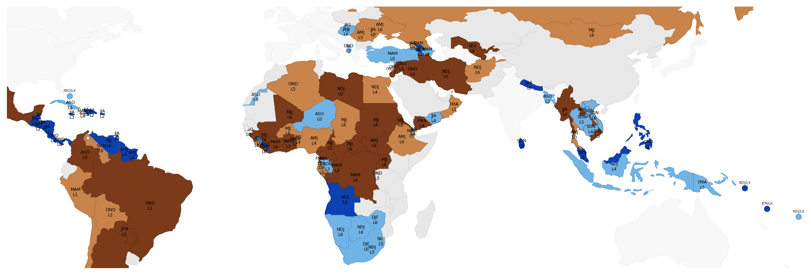
Total association — pairwise r between TNA (Tropical N. Atlantic) and trimester rainfall. Includes signal shared with other climate modes.
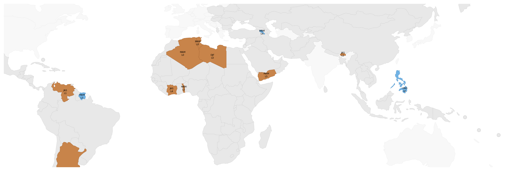
Unique signal — partial r, other climate modes held constant. Shrinkage vs Total = shared variance (not absent signal).
TSA (Tropical S. Atlantic)
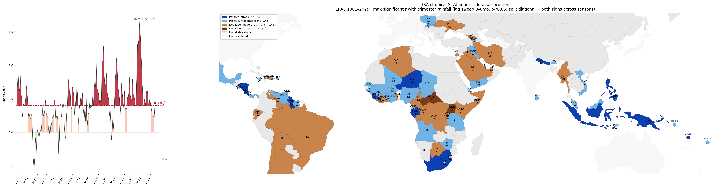
Total association — pairwise r between TSA (Tropical S. Atlantic) and trimester rainfall. Includes signal shared with other climate modes.
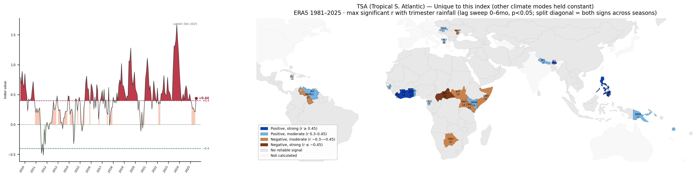
Unique signal — partial r, other climate modes held constant. Shrinkage vs Total = shared variance (not absent signal).
AMM (Atlantic Meridional Mode)
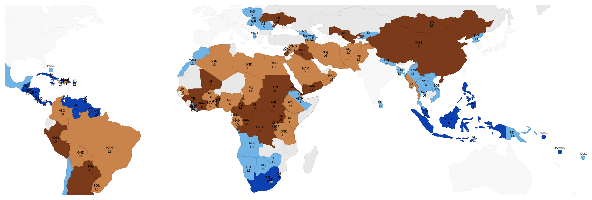
Total association — pairwise r between AMM (Atlantic Meridional Mode) and trimester rainfall. Includes signal shared with other climate modes.
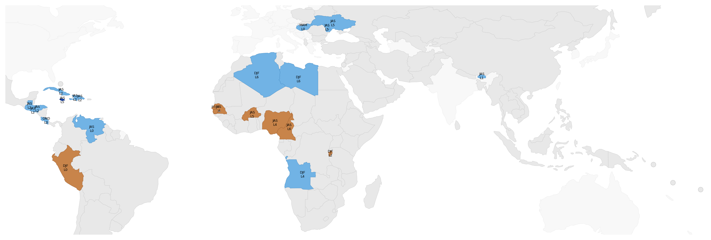
Unique signal — partial r, other climate modes held constant. Shrinkage vs Total = shared variance (not absent signal).
PDO (Pacific Decadal Oscillation)
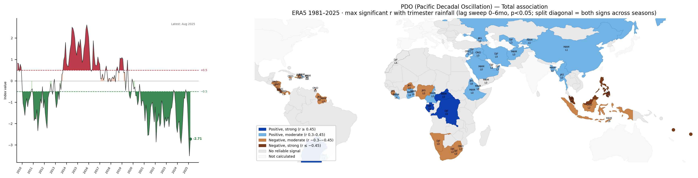
Total association — pairwise r between PDO (Pacific Decadal Oscillation) and trimester rainfall. Includes signal shared with other climate modes.
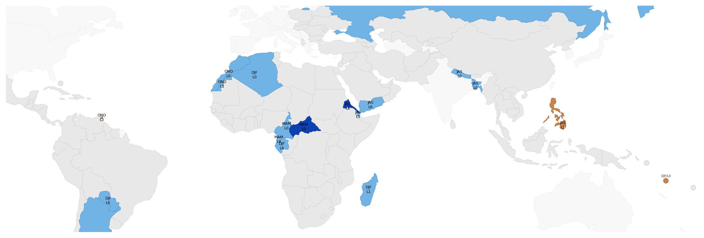
Unique signal — partial r, other climate modes held constant. Shrinkage vs Total = shared variance (not absent signal).
Index Collinearity
Pearson r between climate indices over the full analysis period (1981–2025). High collinearity (e.g. AMM–TNA r≈0.81) means total vs unique signal may diverge substantially for those modes — shrinkage in the unique-signal map reflects shared variance, not absent signal.
Dominant Climate Mode
Each country colored by whichever index has the strongest significant total correlation with its trimester rainfall. Gray = no reliable signal in any mode.
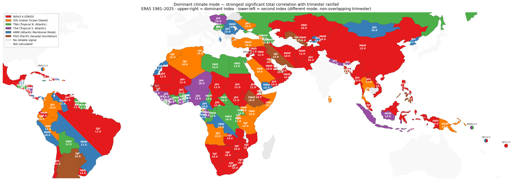
ENSO Composites — El Niño & La Niña
Mean rainfall anomaly (standard deviations from climatology) in each country's headline trimester when Niño3.4 ≥ ±0.5 concurrent with that trimester. The two maps are independent — ENSO impacts are asymmetric.
El Niño composite — mean anomaly when Niño3.4 ≥ +0.5 (brown = drier than normal, blue = wetter).
La Niña composite — mean anomaly when Niño3.4 ≤ −0.5. Roughly opposite to El Niño in ENSO-sensitive regions, but magnitude and pattern differ.